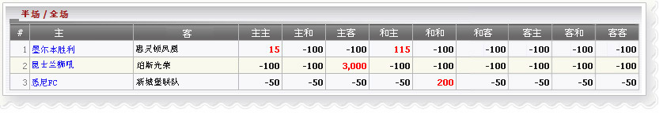

半场/ 全场
定义:
查看代理人'赢/输数字根据半场，全场赛果。

半场/ 全场
- H: 主 A: 客 D: 和
- 主客意思:
- 1 墨爾本勝利 -vs-惠靈頓鳳凰
- 最后赛: 主主--> 代理将输 15
- 最后赛过: 和主 --> 代理将输 115
- 最后赛果: 其他 --> 代理将赢 100
- 2 Queensland Roar -vs- 珀斯光荣
- 最后赛: 主客 --> 代理将输 3000
- 最后赛果: 其他 --> 代理将赢 100
- 3 悉尼FC -vs- 新城堡聯隊
- 最后赛: 和和 --> 代理将输 200
- 最后赛果: 其他 --> 代理将赢 100